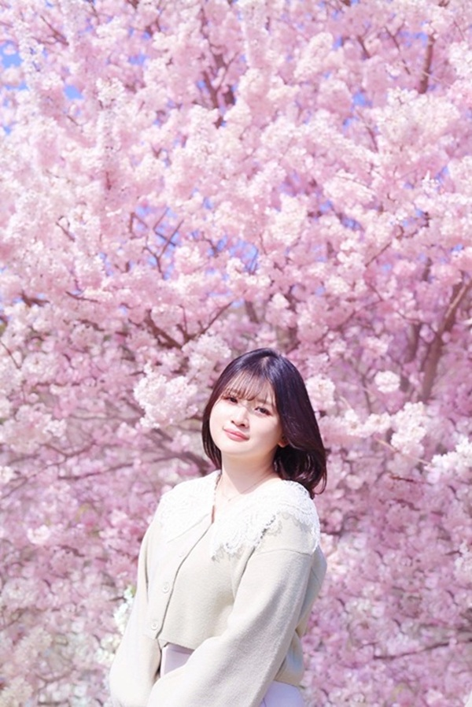
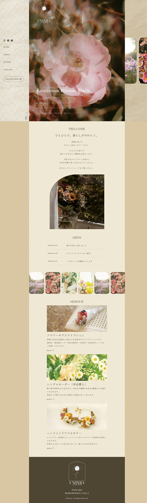
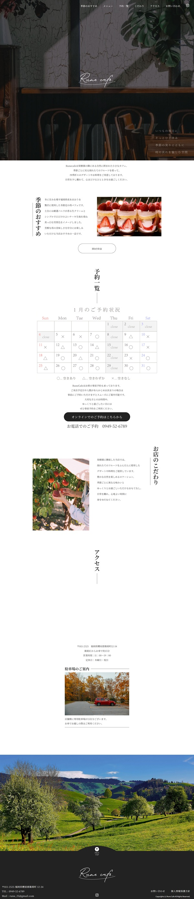
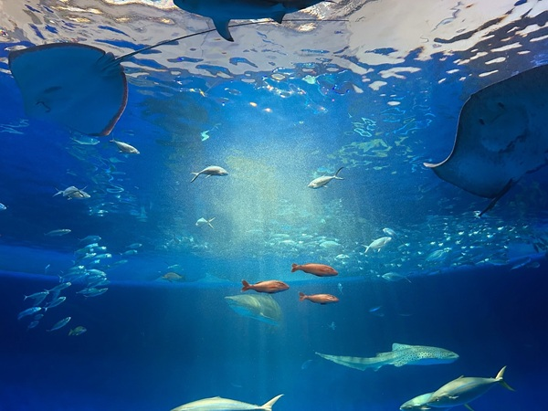
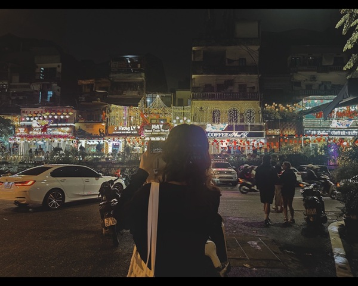
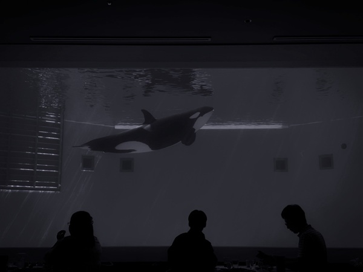
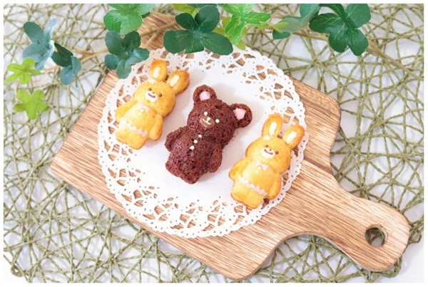
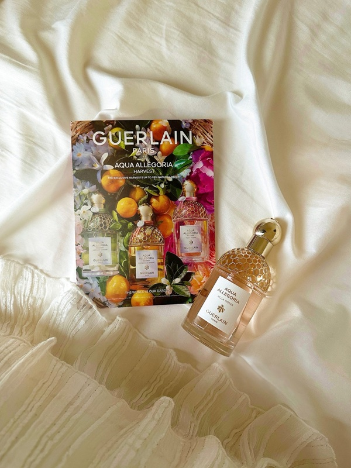
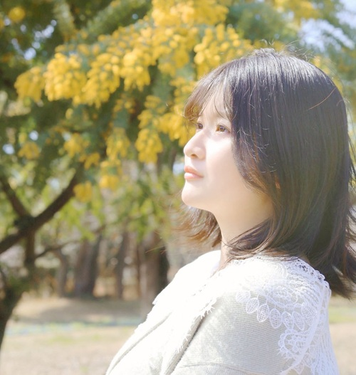

HASHIMOTO YUI
PORTFOLIO.
わたしの作品集
This portfolio features websites
created during vocational
training along with personal
works in video and photography.
わたしの作品集
This portfolio features websites
created during vocational
training along with personal
works in video and photography.

職業訓練で制作したWebサイトと、趣味で取り組んでいる動画・写真作品を掲載しています。
企画から制作まで、自分の手で形にしたものをまとめました。

Website ｜ 自主制作
「社会の誰かが喜ぶサイト」という
共通のテーマでWebサイトを制作しました
Planning ｜ Design ｜ Coding
もっとみる →


Website ｜ 自主制作
職業訓練での最初の課題として
カフェサイトのトップページを制作しました
Planning ｜ Design ｜ Coding
もっとみる →Movie ｜ 自主制作
歌ってみた動画のPVを制作しました
イラストも担当しています
Planning ｜ Design ｜ illustration ｜ Video Editing
もっとみる →Movie ｜ 自主制作
九州の魅力を紹介する動画を
ナレーション付きで制作しました
Planning ｜ Design ｜ Narration | Video Editing
もっとみる →Movie ｜ 自主制作
結婚式で実際に使用した
オープニングムービーを制作しました
Planning ｜ Design ｜ Photography | Video Editing
もっとみる →





1998.06.15生まれ 27歳
建設機械のレンタルサービス業界の営業事務を辞め、
以前より興味のあったWebデザインについて学び始めました。
幼い頃からものづくりが好きで、自分のつくったもので誰かの足を止めることができることに喜びを感じています。営業事務として培ってきた周りのニーズに応える力やプレゼン能力を活かし、「人生をより豊かにするデザイン」を届け、多くの人の力になることができるWebデザイナーを目指しています。
